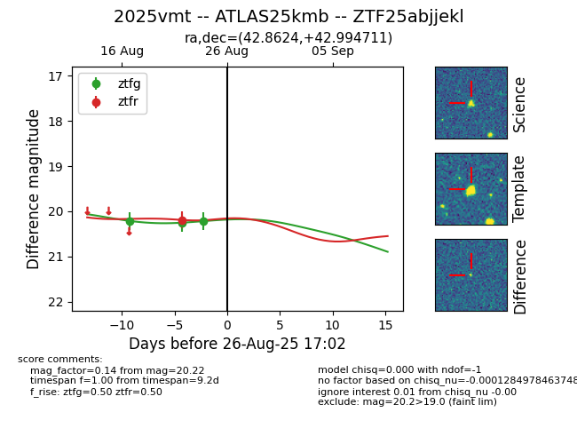

Target 2025vmt at 2025-08-26 17:02, see:
FINK: fink-portal.org/ZTF25abjjekl
Lasair: lasair-ztf.lsst.ac.uk/objects/ZTF25abjjekl
ALeRCE: alerce.online/object/ZTF25abjjekl
TNS: wis-tns.org/object/2025vmt
YSE: ziggy.ucolick.org/yse/transient_detail/2025vmt
alt names
ZTF25abjjekl (ztf,fink)
2025vmt (tns,yse)
ATLAS25kmb (atlas)
coordinates:
equatorial (ra, dec) = (42.8624,+42.99471)
galactic (l, b) = (145.1428,-14.64179)
photometry
last ztfg=20.22, ztfr=20.19
3 ztfg, 1 ztfr detections
